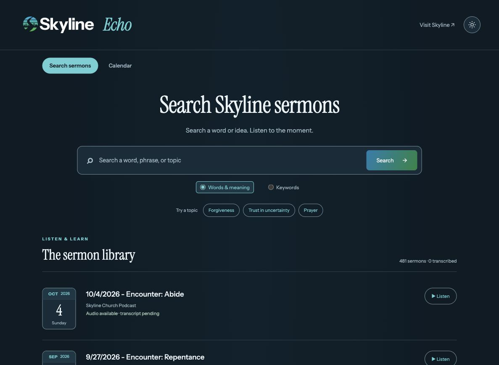

Search the spoken words
Published transcripts become searchable passages, with enough context to understand the result. Optional embeddings add meaning-based retrieval.
Search grows with the transcriptsSkyline Church · Bloomfield, NJ
A home for the messages that stay with you. Explore Skyline’s sermon archive, listen by date, and search the words as transcripts become available.

The listening experience
Start with a date, a phrase, or a message you want to hear again.
Published transcripts become searchable passages, with enough context to understand the result. Optional embeddings add meaning-based retrieval.
Search grows with the transcriptsBrowse month, week, or agenda views. Move between years, jump to a date, and open the sermons for that day.
Explore the calendar ↗Listen to original podcast audio. Transcript results seek to their timestamps; the player’s “Show in list” brings the playing sermon into view.
One persistent audio playerSkyline’s blue–green palette, Instrument typefaces, and color logos carry through both light and dark modes.
Self-hosted brand assetsSpeaker names appear when the podcast explicitly identifies them. Episode descriptions and transcript text remain separate.
Metadata, without guessingChurch Center, the church website, social channels, directions, and Spotify and Apple Podcasts are close at hand.
Visit Skyline Church ↗From podcast to passage
The website stays fast while audio processing happens on a separate local host.
n8n checks the public podcast feed and selects a bounded batch of untranscribed episodes.
Podcast RSS + n8nPython and FFmpeg download and split the audio into 10-minute, mono FLAC chunks in the LXC.
Proxmox LXCGroq returns timestamped text. Completed chunks are cached, and transcripts stay on the local host.
Groq WhisperA protected upload updates Cloudflare D1 and keyword search, without rebuilding the website.
Workers + D1The build
The public website runs on Cloudflare. The local Python tools handle ingestion, transcription, and saved checkpoints. Audio continues to live on the podcast host.
Explore the source ↗Yes. Episode metadata and original audio are available independently of transcripts. Passage search becomes available after actual transcript text is published.
Groq handles speech recognition. Meaning-based search is a separate optional embeddings integration. Without that configuration, smart search visibly falls back to keyword retrieval.
Transcript JSON, chunk-response checkpoints, the local SQLite index, and publication receipts. Downloaded audio and converted chunks are temporary and removed when processing exits normally.
The runner skips indexed sermons and resumes saved chunk responses. Publication has separate receipts, so a failed upload can retry the existing transcript without another Groq transcription call.